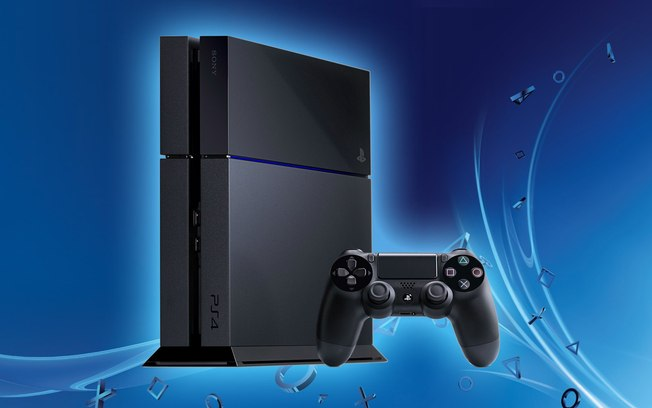

The Playstation 4, most commonly abbreviated for PS4, is a video game console produced and patented by Sony Interactive Entertainment. It is the fourth part of the “Playstation” series, and is part of the company's eighth generation of consoles.
The popular PS4 was announced in 2013, in that year's edition of the event known as “Playstation Meeting”. The event takes place annually in New York and aims to discuss and present to the public the future of the Playstation line. At this event, details of the new console's hardware were revealed and a discussion was raised about the new features that would be presented at launch.
Also shown were some images of games that, at the time, were in development for the new platform. In addition, there were some technical demonstrations. At E3 of the same year, 2013, Sony gave more information about the console, and also presented the device to the public.
This was Sony's first console that was legally edited and marketed in China since the PS2, when the country's government launched a 14-year ban on video games. Negotiations between Sony and the country's leaders ended in May 2014, and the company was able to resume selling its products in Chinese territory. According to Microsoft executives, China was a potential market. Having the possibility to sell their products in that country would contribute (and, in fact, contributed) significantly to the popularization of the newest Playstation.
The expectation for a PlayStation 5 announcement only increases, but there are still a lot of people in Brazil who haven't even bought the PlayStation 4. And some of those people now have a question: is it still worth buying a PS4 or is it better to wait for the PS5? This answer depends a lot on each person's profile, but My PS4 will try to help.
Before we start to analyze the pros and cons of each option, it is good to remember that there is no confirmation from Sony about the PS5 at the moment. Everything that is said about the console is still in the field of rumors. Always keep that in mind before making your decision. Now, come on!